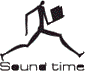
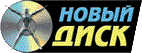
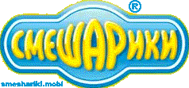
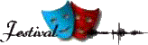
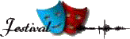
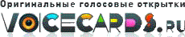
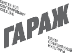

О проекте «Аудио Театр»
«Аудио Театр» был создан в 2003 году как авторская лаборатория
Дмитрия Урюпина (на тот момент – журналиста
и музыкального промоутера) для экспериментов в области радиодрамы. Вскоре после
первых постановок начали поступать и заказы; проект начал сотрудничество со
многими ведущими мультимедийными издательствами. В результате следующие пять лет
проект развивается как студия немузыкальной звукозаписи, ориентированная на
постановку радиоспектаклей, запись и звуковое оформление аудиокниг, подкастов и
т.п. В этот период активно создавалась база профессиональных дикторов, чтецов,
актеров; мы продолжаем сотрудничать с проверенными кадрами – в то время как
база голосов «Аудио Театра» продолжает расти.
Со временем зона интересов расширилась в область саунд-дизайна игр, анимации,
фильмов и т.д.
Ключевым направлением работы (помимо радиопостановок) стали разработки в сфере
эксклюзивного саунд-дизайна, созданного под конкретный проект, без применения
звуковых библиотек и собраний шумов (или с крайне ограниченным их
использованием). Почти все звуки и эффекты придумываются и записываются специально
для создания звуковой картины конкретной работы.
Мы исходим из того, что звук – важнейшая составляющая многих визуальных
искусств; качественный и интересный звук – это 50% успеха. Конечно, библиотеки сэмплов – самое простое решение, но интересной звуковая картина станет только в
том случае, если подходить к созданию звука так же творчески и профессионально,
как и к иным составляющим проекта. Т.е. только тогда, когда звук сделан с
выдумкой, свежо и креативно, из оригинальных аудиоматериалов, с индивидуальным
– порой неожиданным и нестандартным – подходом к созданию саундтрека.
При необходимости для любого проекта нашими коллегами и смежниками может быть
снято видео или создана музыка в различных жанрах (от академической до электроники). Мы также
можем помочь в сведении и мастеринге готового аудиоматериала.
Оставаясь авторским проектом, студия «Аудио Театр» по-прежнему является
творческим объединением, открытым для всех, кто желал бы сотрудничать с нами –
как для потенциальных клиентов с любыми предложениями, так и для желающих
предложить свои силы и таланты.
Здесь вам всегда помогут осуществить любые ваши задумки, реализовать идеи,
получить консультацию или необходимый опыт.
Цены на наши услуги вы можете узнать, скачав файл в формате RTF или PDF.
Коллеги, клиенты, партнеры:
 

 


